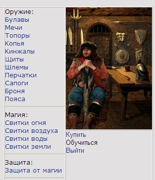
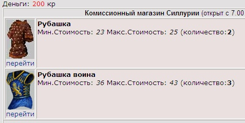
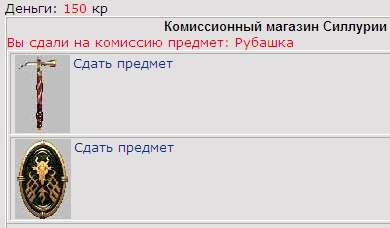
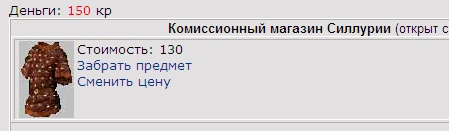
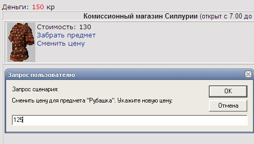
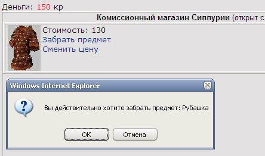

|
Курсы
Регистрация
Методика
Оглавление
Для учащихся

Статьи
Инструменты
Контакты
|
Урок
10.
Создание комиссионного магазина
10.1.
Интерфейс комиссионного магазина.
В процессе игры очень часто возникает потребность избавиться от оружия
или экипировки, которые по каким-то критериям уже не подходят для комфортной
игры. Так например при переходе на более высокий уровень, игрок может купить
оружие присущее этому уровню и ему просто необходимо продать то, чем он
пользовался на младшем уровне.
В 13 уроке мы создадим торговые ряды, где игрок сможет
договариваться о продаже и покупке того или иного предмета.
Однако, к примеру у игрока нет времени вести торговлю и тогда
ему на помощь приходит такое удобное средство как комиссионный магазин. Конечно
за удобства нужно платить и поэтому комиссионный магазин берет свой процент от
продажи предмета.
Еще одно удобство комиссионного магазина в том, что в нем
можно приобрести все типы товаров. Так оружие и броню, которые можно было
покупать в кузне и магические предметы, которые продавались в магической лавке,
теперь можно покупать или сдавать в одном месте.
На центральной площади наш комиссионный магазин будет
выглядеть следующим образом:
Для входа в него мы немного модифицируем на
наш файл описывающий центральную площадь
map.phtml.
|
<div style="position:absolute;left:370px;top:70px;width:149px;
height:136px; z-index:12;z-index:12"><IMG SRC=Items/Towns/Silluria/armor.gif
CLASS=aFilter onmouseover="imover(this)" onmouseout="imout(this)"
onclick="gotoComissionShop()" ALT="Комиссионный
магазин" width="70" height="70"></div> |
При нажатии на изображение
комиссионного магазина, выполняется функция
gotoComissionShop
и мы попадаем во внутрь.
Функция предельно проста:
function gotoComissionShop()
{
location.href='comission.phtml?itemtype=1&mode=1&NickName=<?php
echo "$aNickName"; ?>';
} |
Для создания комиссионного магазина нам
понадобится файл с именем comission.phtml.
Для начала, давайте сделаем меню магазина с учетом того, что
в нем можно приобрести любой товар.
<?php
print( '<td width="138" height="115"
rowspan="2" valign="top">' );
print( 'Оружие:<br>'
);
print( '<a href=comission.phtml?NickName='.$aNickName.'&mode=1&itemtype=1>Булавы</a><br>'
);
print( '<a href=comission.phtml?NickName='.$aNickName.'&mode=1&itemtype=11>Мечи</a><br>'
);
print( '<a href=comission.phtml?NickName='.$aNickName.'&mode=1&itemtype=12>Топоры</a><br>'
);
print( '<a href=comission.phtml?NickName='.$aNickName.'&mode=1&itemtype=13>Копья</a><br>'
);
print( '<a href=comission.phtml?NickName='.$aNickName.'&mode=1&itemtype=14>Кинжалы</a><br>'
);
print( '<a href=comission.phtml?NickName='.$aNickName.'&mode=1&itemtype=2>Щиты</a><br>'
);
print( '<a href=comission.phtml?NickName='.$aNickName.'&mode=1&itemtype=3>Шлемы</a><br>'
);
print( '<a href=comission.phtml?NickName='.$aNickName.'&mode=1&itemtype=4>Перчатки</a><br>'
);
print( '<a href=comission.phtml?NickName='.$aNickName.'&mode=1&itemtype=7>Сапоги</a><br>'
);
print( '<a href=comission.phtml?NickName='.$aNickName.'&mode=1&itemtype=10>Броня</a><br>'
);
print( '<a href=comission.phtml?NickName='.$aNickName.'&mode=1&itemtype=8>Пояса</a><br>'
);
print( '<HR>' );
print( 'Магия:<br>'
);
print( '<a href=comission.phtml?NickName='.$aNickName.'&mode=1&itemtype=11>Свитки
огня</a><br>' );
print( '<a href=comission.phtml?NickName='.$aNickName.'&mode=1&itemtype=12>Свитки
воздуха</a><br>' );
print( '<a href=comission.phtml?NickName='.$aNickName.'&mode=1&itemtype=13>Свитки
воды</a><br>' );
print( '<a href=comission.phtml?NickName='.$aNickName.'&mode=1&itemtype=14>Свитки
земли</a><br>' );
print('<HR>');
print( 'Защита:<br>'
);
print( '<a href=comission.phtml?NickName='.$aNickName.'&mode=1&itemtype=15>Защита
от магии</a><br>' );
print('<HR>');
print( '</td>' );
?> |

10.2.
Группы комиссионных товаров.
В отличии от магазинов, которые мы создавали ранее (кузня,
магическая лавка) в комиссионке товары разбиты на группы. К примеру в
типе предметов броня, могут быть такие товары "Рубашка воина"
, "Рубашка" и
другие.
Таким образом, вначале мы должны показать
сгруппированные товары, а потом по клику мышки по ссылке перейти, мы уже будем
созерцать все предметы, содержащиеся в этой группе.
Например зайдя в группу "Рубашка
воина" игрок увидит внутри
несколько рубашек воина с разными ценами и разным износом и после этого
определится с выбором - есть ли что-то интересное для покупки.
Нажимая в меню на ссылку Броня, мы передаем скрипту
такие важные параметры как &mode=1&itemtype=10. mode - это режим. Если режим
равен единице, значит мы должны отображать группы сходных товаров у которых
itemtype = 10.
Реализовать все это на
PHP можно таким образом:
if ($aMode==1){
// Отобразим содержимое магазина комиссионного
магазина
$query = "SELECT
count(il.ItemType) AS kolvo,
min(Item_ComissionCost) minc,
max(Item_ComissionCost) maxc,
il.IL_ID,
il.ItemName,
il.ItemType,
il.ItemNo,
il.Item_Image,
il.Item_StateCost
FROM
items i
INNER JOIN Items_List il ON (i.IL_ID = il.IL_ID)
WHERE
(il.ItemType = $aItemType) AND
(i.Item_Position = 1)
GROUP BY
il.ItemName,
il.ItemType,
il.ItemNo,
il.Item_Image,
il.Item_StateCost";
$result = mysql_query($query) or
die("Query failed : " .
mysql_error());
while ($aRow =
mysql_fetch_array($result)) {
$aKolVo = $aRow["kolvo"];
$aMinCost = $aRow["minc"];
$aMaxCost = $aRow["maxc"];
$aItem = $aRow["IL_ID"];
$aItemName = $aRow["ItemName"];
$aItemType = $aRow["ItemType"];
$aItemNo = $aRow["ItemNo"];
$aItemImage = $aRow["Item_Image"];
$aStateCost = $aRow["Item_StateCost"];
print('<tr>');
print('<td width="10%" valign="top"><img
src=Items/'.$aItemImage);
print("><br><a href=comission.phtml?NickName=$aNickName&itemtype=$aItemType&itemno=$aItemNo>перейти</a></td>");
print('<td width="90%" valign="top" bgcolor=eae0e0><b>'.$aItemName.'</b><br>Мин.Стоимость:
<i>'.$aMinCost.'</i> Макс.Стоимость: <i>'.$aMaxCost.'</i>
(количество:<b>'.$aKolVo.'</b>)</td>');
print('</tr>');
}
} |
Как Вы помните, комиссионными товарами являются
те, у которых поле
Item_Position
в таблице
Items равно 1. Таким образом нам не нужно
создавать отдельную таблицу комиссионного магазина, как мы делали ранее для
кузницы и магической лавки, нам нужно просто устанавливать поле
Item_Position
в единицу и товар считается сданным в комиссионный
магазин.
Тогда давайте добавим в таблицу
Items немного тестовых товаров игроку Создатель.
разместив их от его имени в комиссионном магазине (Item_Position
= 1)
INSERT INTO Items (IT_ID,IL_ID,Item_Owner,Item_Position,Item_CurrentLife,Item_ComissionCost)
VALUES(4,12,1,1,10,23);
INSERT INTO Items (IT_ID,IL_ID,Item_Owner,Item_Position,Item_CurrentLife,Item_ComissionCost)
VALUES(5,12,1,1,10,25);
INSERT INTO Items (IT_ID,IL_ID,Item_Owner,Item_Position,Item_CurrentLife,Item_ComissionCost)
VALUES(6,13,1,1,12,36);
INSERT INTO Items (IT_ID,IL_ID,Item_Owner,Item_Position,Item_CurrentLife,Item_ComissionCost)
VALUES(7,13,1,1,9,43);
INSERT INTO Items (IT_ID,IL_ID,Item_Owner,Item_Position,Item_CurrentLife,Item_ComissionCost)
VALUES(8,13,1,1,10,40);
INSERT INTO Items (IT_ID,IL_ID,Item_Owner,Item_Position,Item_CurrentLife,Item_ComissionCost)
VALUES(9,1,1,1,10,16); |
В
SQL запросе предваряющем вышеприведенный мы группируем
сходные товары и показываем количество, максимальную и минимальную стоимости
предметов, входящих в эту группу.
Визуально, на странице браузера это выглядит так:

Группировка по типу смотрится гораздо нагляднее, чем если бы
мы сразу показывали все предметы внутри категорий (броня, щиты, пояса и т.д.)
Чтоб перейти непосредственно к списку предметов внутри группы
мы должны нажать на ссылку "Перейти". На этот раз скрипту передается
параметр
&itemno,
который содержит значение из поля
ItemNo.
Для отображения предметов внутри группы мы напишем
следующий фрагмент скрипта на языке
PHP:
....}
elseif ($aMode==2){
// режим просмотра отдельных товаров внутри группы
$query = "SELECT
i.Item_ComissionCost,
i.IT_ID,
il.IL_ID,
il.ItemName,
il.ItemType,
il.ItemNo,
il.Item_Image,
il.Item_FullLife,
i.Item_CurrentLife,
il.Item_StateCost
FROM
items i
INNER JOIN Items_List il ON (i.IL_ID = il.IL_ID)
WHERE
(il.ItemType = $aItemType) AND (il.ItemNo = $aItemNo) AND
(i.Item_Position = 1)
order by i.Item_ComissionCost";
$result = mysql_query($query) or
die("Query failed : " .
mysql_error());
while ($aRow = mysql_fetch_array($result))
{
$aCost = $aRow["Item_ComissionCost"];
$aItem = $aRow["IL_ID"];
$aItemName = $aRow["ItemName"];
$aItemType = $aRow["ItemType"];
$aItemNo = $aRow["ItemNo"];
$aItemImage = $aRow["Item_Image"];
$aStateCost = $aRow["Item_StateCost"];
$aBuyItem = $aRow["IT_ID"];
$aItemFullLife = $aRow["Item_FullLife"];
$aItemCurLife = $aRow["Item_CurrentLife"];
print('<tr>');
print('<td width="10%" valign="top"><img
src=Items/'.$aItemImage);
print("><br><a href=comission.phtml?NickName=$aNickName&itemtype=$aItemType&itemid=$aBuyItem>купить</a></td>");
print('<td width="90%" valign="top" bgcolor=eae0e0><b>'.$aItemName.'</b>
Долговечность: '.$aItemCurLife.'/'.$aItemFullLife.' <br>Стоимость: <i>'.$aCost.'</i></td>');
print('</tr>');
}
} |
Теперь SQL запрос отбирает
еще и только те товары, которые удовлетворяют условию группы (il.ItemNo
= $aItemNo)
В окне нашей игры это выглядит примерно так:

Теперь нам остается выбрать интересующий нас товар и нажать
на ссылку "Купить"
10.3.
Покупка комиссионных
предметов.
Покупка выбранного предмета осуществляется путем передачи скрипту
магазина
comission.phtml параметра
&itemid,
который содержит идентификатор предмета в таблице
Items.
Прием этого параметра произведем стандартным образом:
// Раз передан этот параметр, значит режим покупки
$iBuy = false;
if (!empty($_GET['itemid']))
{
$aBuyItem = $_GET['itemid'];
$iBuy = true;
} |
Сам механизм приобретения предмета
можно описать на
PHP следующим образом:
if ($iBuy){ // Была
инициирована покупка
$lNoMoney=false;
$query = "SELECT i.Item_ComissionCost,i.Item_Owner,
il.ItemName FROM items i inner join Items_List il on i.il_id=il.il_id
where IT_ID='$aBuyItem'";
$result = mysql_query($query,$link) or
die("Query failed : " .
mysql_error());
$aRow = mysql_fetch_array( $result);
$aCost = $aRow["Item_ComissionCost"]; //
комиссионная стоимость
$aOwner = $aRow["Item_Owner"]; //
бывший владелец предмета
$aItemName = $aRow["ItemName"]; // название
предмета из справочника
$aShowCost = $aCost; // стоимость в сообщении о
покупке
if ($aMoney >= $aCost ){
// хватит ли денег купить вещь в комиссионке?
$aMoney = $aMoney - $aCost;
// Засунем в рюкзак
купленную вещь и поменяем владельца!
$query = "UPDATE items SET Item_Owner=$aUserID, Item_Position=2 where
IT_ID='$aBuyItem'";
$result = mysql_query($query,$link) or
die("Query failed : " .
mysql_error());
// Уменьшим наши деньги
$query = "UPDATE users SET Character_Money=Character_Money-$aMoney
WHERE Nick_Name='$aNickName'";
$result = mysql_query($query) or
die("Query failed : " .
mysql_error());
// Добавим денег предыдущему владельцу вещи с учетом комиссии 10%
$aCost = $aCost - ($aCost*10/100);
$query = "UPDATE users SET Character_Money=Character_Money+$aCost
WHERE User_Id='$aOwner'";
$result = mysql_query($query) or
die("Query failed : " .
mysql_error());
}else
{
$lNoMoney=true;
}
} |
Вначале мы узнаем предыдущего владельца предмета, чтоб комиссионный магазин
перевел ему деньги за купленный нами товар и комиссионную стоимость предмета.
Если у нас хватает средств на его покупку, происходит процесс смены владельца
путем установки поля
Item_Owner
на USER_ID
купившего персонажа.
Естественно у него отнимаются деньги в размере комиссионной
стоимости предмета, а бывший владелец купленного товара получает эту стоимость
за вычетом 10% комиссионного вознаграждения ($aCost
= $aCost - ($aCost*10/100)).
Полный код файла comission.phtml Вы
можете увидеть здесь.
10.4.
Сдача предметов
В предыдущих пунктах нашего текущего урока мы искусственно
создали товары на полках комиссионного магазина. Сейчас нам нужно научиться
самим сдавать собственные предметы в комиссионку.
Давайте сходим в кузницу и купим немного товаров для того
чтоб их потом сдать на комиссию. С точки зрения игровой логики - это неразумный
поступок, ведь мы потеряем как минимум 10% их стоимости на оплату услуги
комиссионного магазина (в случае если сдадим по госстоимости). Но для учебных
целей такая бессовестная трата игровых денег вполне оправдана.
Допустим мы купили несколько предметов в кузнице и теперь они
лежат в рюкзаке нашего персонажа. Чтоб отобразить их для сдачи в комиссионке
давайте кроме пункта меню "Купить" добавим пункт меню "Сдать", который на
HTML будет выглядеть так:
|
<a href="comission.phtml?sell=1&NickName=<?
echo $aNickName ?>">
Сдать</a><br> |
Параметр
sell,
который мы передаем скрипту нашего комиссионного магазина как раз и переводит
нас в режим показа вещей из рюкзака для дальнейшей сдачи в магазин.
Прием этого параметра и установка режима просмотра своих ($aMode
= 3) вещей выглядит так:
// Режим показа рюкзака для сдачи вещей
if (!empty($_GET['sell']))
{
$aMode = 3;
} |
Теперь можно отобразить свои вещи для сдачи в
комиссионку:
if ($aMode==3){ //
режим сдачи своих вещей
// Отобразим содержимое рюкзачка для сдачи
$query = "SELECT i.IT_ID, i.Item_Position,
il.ItemType, il.ItemNo, il.Item_Image, il.ItemName FROM Items i inner
join Items_List il on il.il_id=i.il_id WHERE Item_Owner='$aUserID' and
Item_Position='2'";
$result = mysql_query($query) or
die("Query failed : " .
mysql_error());
while ($aRow =
mysql_fetch_array($result)) {
$aItemID = $aRow["IT_ID"];
$aItemType = $aRow["ItemType"];
$aItemNo = $aRow["ItemNo"];
$aItemImage = $aRow["Item_Image"];
$aItemName = $aRow["ItemName"];
echo "<tr><td>" . "<img align='left'
border=0 src=Items/".$aItemImage." ALT=".$aItemName."><a href='#'
onClick=\"sale($aItemID,'".$aItemName."')\">Сдать
предмет</a>" . "</td></tr>";
}
} |
Этот фрагмент очень похож на код, который мы
использовали для показа вещей в рюкзаке (по-секрету - мы его оттуда и взяли).
Единственное - нужно сформировать ссылку, щелкая на которую игрок может ввести
цену на сдаваемый в комиссионку предмет. В вышеприведенном коде, при клике мышью
на этой ссылке, вызывается функция
sale,
которая на
JavaScript выглядит так:
function sale(id, name){
var kr = 0;
var s = prompt("Сдача
товара \""+name+"\". Укажите цену:", kr);
if ((s != null)&&(s != '')) {
kr = parseInt(s);
if (kr>0){
location.href="comission.phtml?NickName=<? echo $aNickName ?>&sellid="+id+"&kr="+s+"&sellname="+name;
} else {
alert("Вы не можете назначить цену: "+s);
}
}
} |
Мы используем стандартное диалоговое окно
prompt
для того чтоб игрок ввел цену сдаваемого предмета. Потом правда
нужно проверить, ввел ли он корректные цифры при помощи функции
parseInt.
Если эта сумма больше нуля мы снова отдаем управление в наш скрипт передавая
туда параметры
&sellid
(идентификатор предмета в таблице
items) и
&kr
(введенная игроком стоимость товара)
Теперь мы принять эти параметры в скрипте магазина:
// Режим сдачи предмета из рюкзака
if (!empty($_GET['sellid']))
{
$aSellItem = $_GET['sellid'];
$aKr = $_GET['kr'];
$aSellName = $_GET['sellname'];
$iSell = true;
$aMode = 3;
} |
И реализуем непосредственно сдачу предмета:
if ($iSell){ // Была
инициирована сдача в магазин
// Засунем вещь на полку магазина
$query = "UPDATE items SET Item_Position=1,
Item_ComissionCost=$aKr where IT_ID='$aSellItem'";
$result = mysql_query($query,$link) or
die("Query failed : " .
mysql_error());
} |
Сдача заключается в изменение значения поля
на
Item_Position
единицу и полю
Item_ComissionCost
присваивается
стоимость предмета.
Результат сдачи предмета может выглядеть так:

10.5.
Переоценка и возврат предметов.
Иногда возникает ситуация, когда игроку необходимо поменять
стоимость сданного в комиссионку предмета. Допустим ваш товар долго не продается
и на полке появились сходные товары с меньшим износом с более конкурентной
ценой. Чтоб Ваш предмет быстрее продался поневоле придется сбавлять стоимость.
Иногда вообще нужно забрать свой предмет из комиссионки. К
примеру, игрок договорился за эту же стоимость продать его в торговой зале, где
он не потеряет 10% комиссионных услуг.
Давайте сделаем пункт меню "Забарть", который будет вызывать
режим отображения предметов сданных в комиссионный магазин. На HTML будет выглядеть так:
|
<a href="comission.phtml?take=1&NickName=<?
echo $aNickName ?>"> Забрать</a><br> |
Параметр
take,
который мы передаем в файл comission.phtml переведет
наш комиссионный магазин в режим показа наших сданных товаров. На
PHP это реализуется таким образом:
if ($aMode==4){ //
режим отображения сданных вещей
// Отобразим содержимое сданных вещей
$query = "SELECT i.IT_ID,
i.Item_ComissionCost, i.Item_Position, il.ItemType, il.ItemNo,
il.Item_Image, il.ItemName FROM Items i inner join Items_List il on
il.il_id=i.il_id WHERE Item_Owner='$aUserID' and Item_Position='1'";
$result = mysql_query($query) or
die("Query failed : " .
mysql_error());
while ($aRow =
mysql_fetch_array($result)) {
$aItemID = $aRow["IT_ID"];
$aItemType = $aRow["ItemType"];
$aItemNo = $aRow["ItemNo"];
$aItemImage = $aRow["Item_Image"];
$aItemName = $aRow["ItemName"];
$aCost = $aRow["Item_ComissionCost"];
echo "<tr><td>" . "<img align='left' border=0
src=Items/".$aItemImage." ALT=".$aItemName.">".
"Стоимость: $aCost".
"<br><a href='#' onClick=\"takeback($aItemID,'".$aItemName."')\">Забрать
предмет</a>".
"<br><a href='#' onClick=\"chsale($aItemID,'".$aItemName."',$aCost)\">Сменить
цену</a>" . "</td></tr>";
}
} |
Нет ничего проще чем отобразить предметы игрока, где
Item_Position
равно единице. На странице браузера
это будет выглядеть так:

Нажав на ссылку
Сменить цену игрок
вызывает функцию
chsale, код которой на
JavaScript выглядит так:
function chsale(id, name, kr){
var s = prompt("Сменить цену для предмета \""+name+"\". Укажите новую
цену:", kr);
if ((s != null)&&(s != '')) {
location.href="comission.phtml?NickName=<?
echo $aNickName ?> &chid="+id+"&kr="+s+"&chname="+name;
}
} |

Играющий вводит новую цену и нажимает Ок. После этого в
скрипт сценария передаются параметры
&chid,
который является идентификатором предмета,
&kr
- новая стоимость и
&chname
- название предмета
Наш PHP код
должен обработать эту ситуацию и поменять стоимость предмета в таблице
предметов:
if ($iChSell){ //
Была инициирована переоценка предмета
// Поменям стоимость предмета в комиссионке
$query = "UPDATE items SET Item_ComissionCost=$aKr
where IT_ID='$aChItem'";
$result = mysql_query($query,$link) or
die("Query failed : " .
mysql_error());
} |
Если
же игрок нажимает на ссылку Забрать предмет, то в этом случае срабатывает
JavaScript функция
takeback,
код которой также предельно прост:
function takeback(id, name){
if ( confirm( "Вы действительно хотите забрать предмет: "+name) ){
location.href="comission.phtml?NickName=<? echo $aNickName ?>&takeid="+id+"&takename="+name;
}
} |

В случае положительного решения, выполняется следующий
PHP код:
if ($iTake){ //
Забираем свои товары
// Засунем вещь снова к себе в рюкзак
$query = "UPDATE items SET Item_Position=2 where
IT_ID='$aTakeItem'";
$result = mysql_query($query,$link) or
die("Query failed : " .
mysql_error());
} |
и
предмет снова возвращается в рюкзак игрока (Item_Position=2).
В качестве упражнения Вы можете сделать так, чтоб переоценка и возврат предмета
из комиссионки был платным. Например, за это взималась 1 кредитка!
Полный текст файла comission.phtml
Вы можете найти здесь.
В следующем уроке мы займемся созданием клубного чата, научимся писать
сообщения всем и отдельным игрокам, использовать смайлики.
|
|